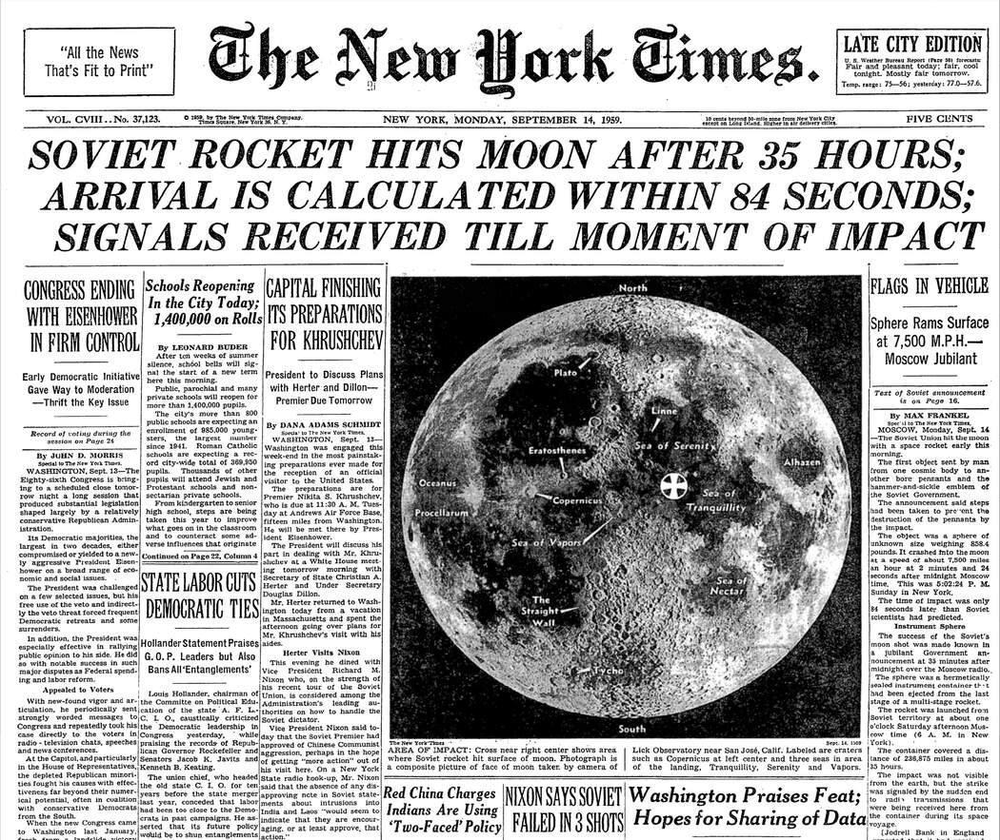

The moon has been a source of inspiration and wonder throughout human history. Its beauty and mystery have led to countless quotes that capture its essence.
"Behind the world is the moon, a silent witness to our dreams and fears".Scientists have been studying the moon for hundreds of years and have built up an incredible wealth of knowledge about our lunar companion. Live Science brings you the best moon facts and answers all of your lunar queries, from how did the moon form and whether the moon could ever be pushed from orbit to what is the "man in the moon" and why we can sometimes see the moon in the daytime. Our expert writers and editors also keep you updated on what's going on with our natural satellite, explain how you can see different lunar events, and provide coverage of new scientific discoveries, such as scientists confirming the moon has a solid iron "heart" just like Earth, and more with the latest moon news, features and articles.
Scientists may have solved the mystery of why the moon shows ancient signs of magnetism although it has no magnetic field today. An impact, such as from a large asteroid, could have generated a cloud of ionized particles that briefly enveloped the moon and amplified its weak magnetic field.
© 2025 A2Z Quotes All rights are reserved